You have understood how the surface features of the earth
are depicted on maps and analyzed. The advancements
in the field of science and technology have made
information gathering, map making, and subsequent
analysis easier and more efficient. Through this lesson you
can understand how the launching of satellites and the
use of computer softwares for the analysis of geo-spatial
data make learning geography more human centered.
The invention of photography in the 19th century has
brought about a drastic change in data collection. The
possibility of capturing photographs from higher
elevations mounting cameras on balloons and air
crafts has been explored ever since. Data collection
using satellites began in 1960. Along with cameras,
different types of scanners were also introduced for
data collection. Such a method of collecting
information about an object, place or phenomenon
without actual physical contact is remote sensing.
An energy source is essential for remote sensing.
This may be the solar energy containing
electromagnetic radiation or an aritificial source
of light. Remote sensing is made possible either
by utilizing the sunlight or an artificial light
reflected from various objects. When
photographs are taken by using a camera
with flash, the camera is the sensor and the
light beam from the flash is an artificial energy.
The electromagnetic energy reflected and
radiated by objects is utilized in remote sensing
technology.
Devices used for data collection in
remote sensing are called sensors.
Cameras and scanners are sensors.
The
sensors
record
the
electromagnetic radiations reflected
by objects.
The carrier on which sensors are
fixed is called a platform. Sensors
can be installed on balloons, air
crafts and satellites. Based on the
source of energy and the platform
remote sensing can be classified as
follows.
Classification of Remote Sensing Based on Source of energy
Remote sensing
Passive Remote Sensing
Remote Sensing is
carried out with the
help of solar energy is
known as passive
remote sensing. Here
the sensors do not emit
energy by itself.
Fig. 6.2
96
Active Remote Sensing
Remote Sensing made with
the aid of artificial source of
energy radiating from the
sensor is known as active
remote sensing.
Classification of Remote Sensing based on the platform
Terrestrial Photography
Aerial Remote Sensing Satellite Remote Sensing
The method of obtaining the
The method of obtaining
The process of gathering
earth’s topography using
photographs of the earth’s information using the sensors
cameras from the ground is surface continously from the installed in artificial satellites
known as terrestrial
sky by using cameras
is known as satellite remote
photography.
mounted on aircrafts is
sensing.
known as aerial remote
sensing.
Fig. 6.4
Fig. 6.5
Fig. 6.6
You have understood the different methods of remote
sensing.
Don’t we take the photographs of landscape during
picnic? What type of remote sensing is this?
Aerial Remote Sensing
Aerial remote sensing is generally used to gather information
about comparatively smaller areas. The advantage of aerial
remote sensing is that information of any region can be
gathered in accordance with our requirements. Another merit
of this method is that contiguous pictures of the areas along
the path of the air crafts are made available. The photographs
Eyes in the Sky and Analysis of information
obtained through this method are called aerial photographs.
In each aerial photograph, nearly 60% of the places depicted in
the adjacent photo is included. This is done for ensuring
contiguity and to obtain three dimensional vision with the help
of stereoscope. This is called overlap in aerial photographs.
Look at the figure 6.7 illustrating the concept of overlap.
Camera
A
C
B
Land surface
Figure 6.7
It can be seen that each photograph exhibits as much as 60
percentage area as repetition. Major share of areas in the figure
A are present in figure B and those of figure B are repeated in
figure C. Two such photographs of adjoining areas with overlap
are called a stereo pair. Figure A and B as well as B and C are
stereo pairs respectively. The
instrument which is used to obtain
three dimensional view from the stereo
pairs is called stereoscope (Fig. 6.8)
When viewed through a stereo scope,
we get a three dimensional view of the
area depicted in the setero pair. Such a
three dimensional view obtained is
called Stereoscopic vision. Though
Figure 6.8
aerial remote sensing has several advantages they have some
limitations as well. Let’s see what they are.
The shaking of air
crafts affects the
quality of photos.
The aircrafts require
open space for takeoff
and landing.
It is not practical to
take photographs of
regions that are vast
and extensive.
Landing the air crafts
frequently for
refueling increases the
cost.
With the advent of remote sensing using artificial satellites
these limitations have been overcome to a great extent. Now
let us understand the method of remote sensing by using
artificial satellites.
As the aerial photographs are highly useful for viewing a region as a whole and for distinguishing the heights and depressions of the
earth's surface aerial photographs were used widely since the second
world war. Aerial photographs are also used for the preparation of topographical maps. Aerial photography started in India after independence.
The responsibility of aerial survey in India has been vested with the
Indian Air Force, Indian Aerospace Company based in Kolkata and the
National Remote Sensing Centre.
Satellite Remote Sensing
The process of collecting information using sensors fixed on
artificial satellites is called satellite remote sensing. The
artificial satellites are mainly divided into two types:
Geostationary satellites and Sun Synchronous satellites.
Eyes in the Sky and Analysis of information
99
Page 12
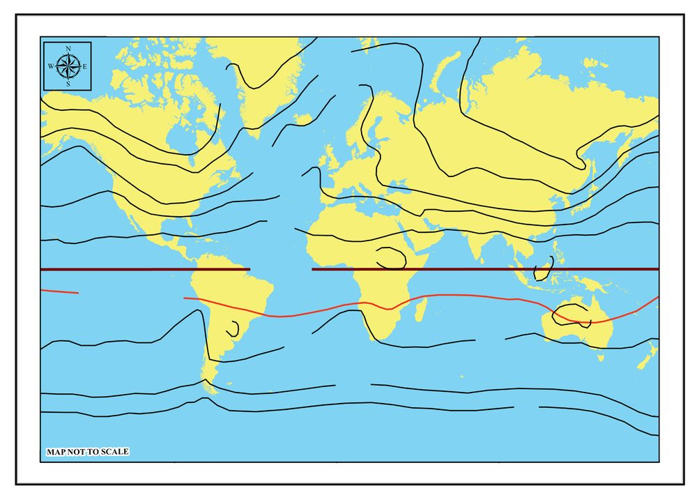
Figure fig_ch01_p012_01 (Page 12)
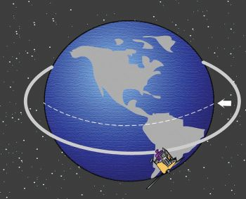
Figure fig_ch01_p012_02 (Page 12)
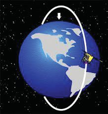
Figure fig_ch01_p012_03 (Page 12)
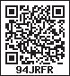
Figure fig_ch01_p012_04 (Page 12)
Social science - II
Geostationary satellites
Figure 6.9
Sun synchronous satellites
Figure 6.10
These are the satellites that move in Sun synchronous satellites are the
equal velocity with the earth’s rotation. artificial satellites that passes around the
(Fig. 6.9) The features of these satellites earth along the poles (Fig. 6.10). The
are given below:
features of these satellites are given
$ They orbit the earth at an elevation below:
of about 36000 kilometres above the $ The orbit of these satellites is about
earth.
900 km in altitude.
$ One third of the earth comes under $ The surveillance area is less than that
its field of view.
of the geostationary satellites.
$ As the movement of these satellites
$ The repetitive collection of informacorresponds to the speed of rotation
tion of a region at regular interval is
of the earth, it stays constantly above
possible.
a specific place on the earth.
$ Used for the collection of data on
$ This helps in continuous data colnatural resources, land use, ground
lection of an area.
water etc.
$ It is used in telecommunication and
$ These satellites are mainly used for
for weather studies.
remote sensing purposes.
$ India’s INSAT satellites are
examples of geo-stationary $ Satellites in IRS, Landsat series
are examples of sun synchronous
satellites.
satellites.
$
$
With the help of the internet collect the details of the geo – stationary and sun
synchronous satellites launched by India and prepare notes.
To collect more information log on to www.isro.gov.in and www.landsat.
usgs.gov.
Haven't you understood that the information about the earth’s surface is collected
with the help of sensors.
100
Eyes in the Sky and Analysis of information
Page 13
Figure fig_ch01_p013_01 (Page 13)
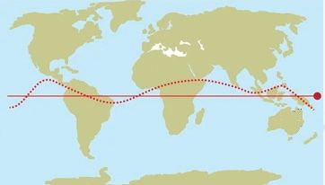
Figure fig_ch01_p013_02 (Page 13)
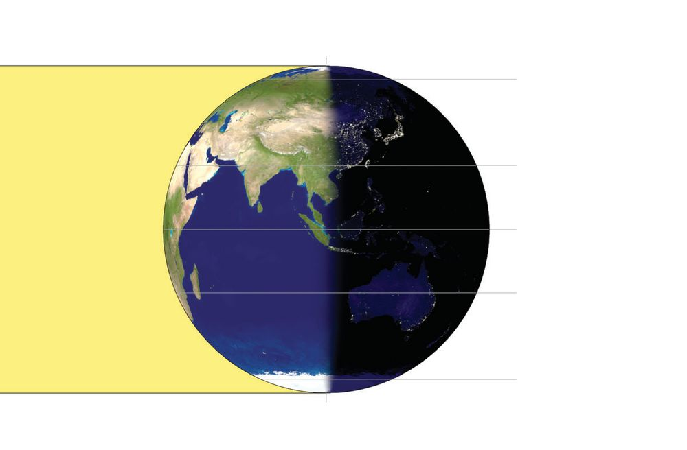
Figure fig_ch01_p013_03 (Page 13)
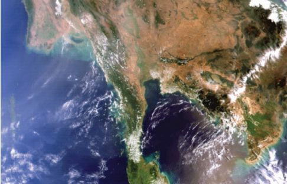
Figure fig_ch01_p013_04 (Page 13)
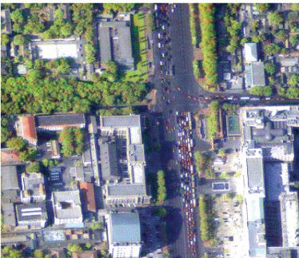
Figure fig_ch01_p013_05 (Page 13)
Standard - X
Sensors record the electromagnetic radiation either
reflected or emitted by the objects. Each object on the
surface of the earth reflects electromagnetic radiation
in different measures. For example, the energy
reflection of plants is different from that of the water
bodies. The amount of reflected energy by each object
is called the spectral signature of that object.
The sensors on artificial satellites distinguish objects
on the earth’s surface based on their spectral signature
and transmit the information in digital format to the
terrestrial stations. This is interpreted with the help of
computers and converted in to picture formats. These
are called satellite imageries. Fig 6.11. The size of the
smallest object on the earth’s surface that a satellite
sensor can distinguish is called the spatial resolution
of the sensor.
Figure 6.11
Look at the figures (Fig. 6.12 – A and B). These are the satellite
imageries captured by two sensors with different spatial
resolution. Can we see the features on the earth’s surface with
greater clarity in figure 6.12 B than in figure 6.12 A? Which of
these sensors took images with better spatial resolution?
Spatial Resolution – I Kilometre
A
Spatial Resolution – I metre
Figure 6.12
B
What kind of change that you can find in satellite
imageries as the spatial resolution decreases?
Eyes in the Sky and Analysis of information
101
Page 14
Figure fig_ch01_p014_01 (Page 14)
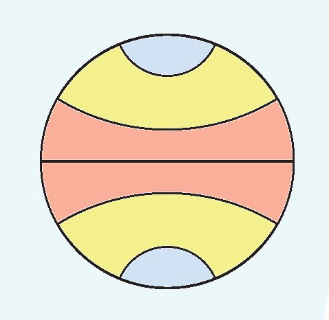
Figure fig_ch01_p014_02 (Page 14)
Social science - II
The clarity of satellite imageries
differ as spatial resolutions
varies.
Name of some satellites and their spatial resolution are given below:
Satellite
Sensors
Spatial Resolution
(in square meter)
Landsat
1, 2, 3, 4, 5
Multi spectral
Scanner
79
SPOT
Panchromatic
Camera
20
IRS
PAN LISS - III
5.8
Geo Eye
Panchromatic
Multi spectral
Camera
0.46
With the help of the internet observe
the satellite imageries provided by
different satellites and compare the
clarity in imageries based on their
spatial resolution.
Uses of remote sensing
technology
Remote sensing in India
Photo interpretation institute was established at
Dehradum in 1966 for analyzing and studying
aerial photographs. Later this institution becomes
Indian institute of Remote sensing (IIRS). The
satellite remote sensing in India began with
launch of the satellites Bhaskara I and II in 1970.
Institutions like National Remote Sensing Centre
(NRSC) (erstwhile NRSA), Indian Space
Research Organization (ISRO), Department of
Space (DOS) and Space Application Centre
(SAC) are constantly engaged in making use of
remote sensing for the welfare of the society. The
complete responsibility of collecting, storing
processing and distributing the data made
available by Indian Remote sensing satellites are
vested in the hands of National Remote sensing
centre whose head quarter is at Hyderabad
(NRSC) https://nrsc.gov.in.
$ For the assessment of weather
and its observations
$ For ocean explorations
$ To understand the land use of an
area.
$ For the monitoring of flood and
drought
$ For identifying forest fires in
deep forests and to adopt
controlling measures
$ To collect data regarding the
extent of crops and spread of pest
attack
$ For oil explorations
$ To locate ground water potential
places
$
You have understood that a large
amount of information about the
earth is received through remote
sensing technology. We can
prepare maps, tables and graphs to
find scientific answers to our quiries by the analysis of the
information obtained through remote sensing and other means,
using a computer based technology called Geographic
Information System.
Geographic Information System - GIS
Geographic Information System is a computer based information
management system by which the data collected from the
sources of information like maps, aerial photographs, satellite
imageries, tables, surveys etc. are incorporated in to the computer
using softwares, which are retrieved, analyzed and displayed
in the form of maps, tables and graphs.
Fig. 6.13 shows the different stages in Geographic Information
System.
Figure 6.13
Entering basic data in to computer using data input devices like
CDs' and Scanners is the first step. Various layers can be created
based on the collected data with the help of Geographic
Information System softwares. The analyzed data can be
converted in accordance with our needs in to products either in
the form of maps, tables or digital data.
All data analysis with GIS are done based on two kinds of data.
Let us have a look at them.
Eyes in the Sky and Analysis of information
103
Page 16
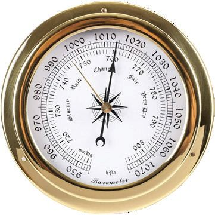
Figure fig_ch01_p016_01 (Page 16)
Social science - II
1. Spatial data
Find out the latitudinal and longitudinal location of our country
with the help of the website Bhuvan (https: bhuvan – app I.
nrse.gov.in) or with an atlas. Each feature on the surface of the
earth has a location of its own. Such features of the earth's surface
having a specific location an known are spatial data.
Find out the latitudinal and longitudinal location of your school with
the help of Bhuvan and write here.
Latitude
: ......................................
Longitude : ......................................
2. Attributes
The additional information about the characteristics of each
spatial data on the earth’s surface are called attributes. The
attributes can be combined with spatial data.
Find out the following details of your school.
Number of teachers
: ..............................
Number of class rooms
: ..............................
Number of students
: ..............................
Whether your school building is multi storied or single?: Yes/No
The details you recorded are the attributes of your school. If we
can collect and include the spatial data and attributes of places
in the data base, the GIS can give precise and scientific answers
to the various queries about that place.
Layers
Observe the portion of a topographic map shown in the figure
6.14. Haven't you see the natural and manmade features like
streams, roads, vegetation, buildings etc on the map? Can we
separate the features one by one to make separate maps. This is
possible through GIS. You can see (fig. 6.14) that water channels,
roads etc shown separately in the figure. The thematic maps
prepared and stored in Geographic Information System for
analytical purpose are called layers. The spatial relationship
among the features on the surface of the earth can easily be
understood by analyzing the appropriate layers.
Layers of the topographical maps
NT-875-2-SOC.SCI.-II-10-E-VOL.2
Figure 6.14
In the given figure (fig:6.14) parts of drainage network near a reservoir are
shown. Can you find out the different layers that have been used here?
Find out the other possible layers from the given topographic map?
Analytical Capabilities of GIS
The surface features of the earth collected as spatial data and attributes
can be analyzed in various ways by the GIS. Network analysis, buffer
analysis and overlay analysis are the important analytical capabilities
of GIS.
Eyes in the Sky and Analysis of information
105
Page 18
Figure fig_ch01_p018_01 (Page 18)
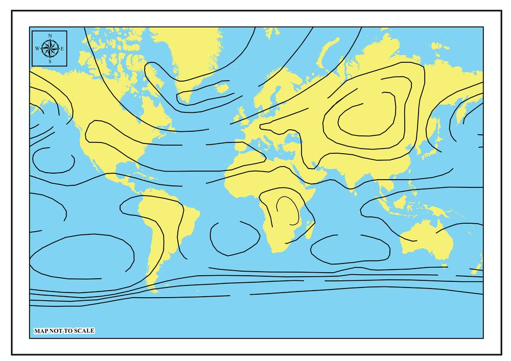
Figure fig_ch01_p018_02 (Page 18)
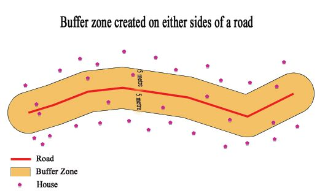
Figure fig_ch01_p018_03 (Page 18)
Social science - II
Overlay Analysis
Overlay analysis is used for understanding the mutual
relationship among the various features on the earth’s surface
and the periodic changes undergone by them. Overlay analysis
is helpful in understanding the changes in the area of crops, the
changes in land use etc.
For example. If we want to understand the changes in the area
under paddy cultivation in Thrissur district by the year 2015
compared to 2000, all we have to do is to overlay the land use
maps of Thrissur in the corresponding years.
Buffer Analysis
Suppose if we want to find out the number of houses located
within three kilometre radius of your school, the possibility of
buffer analysis can be used effectively. If the spatial data of the
place where your school is located is
subjected to buffer analysis in GIS, a circular
area with 3 km radius can be created around
your school so as to find out the number of
houses in that area. (fig 6.15)
Figure 6.15
Suppose a road in your region is widening
from 5 m to 8 m as per the government
decision. In such a situation , a zone of
required width is created along the existing
road by using the possibility of buffer
analysis in GIS. Thus we can easily determine
how much land has to be acquired and how
many people will become homeless.
A circular zone created around a point feature
or a parallel zone created aside a linear
feature in buffer analysis is called buffer
zone.
Figure 6.16
106
Eyes in the Sky and Analysis of information
Page 19
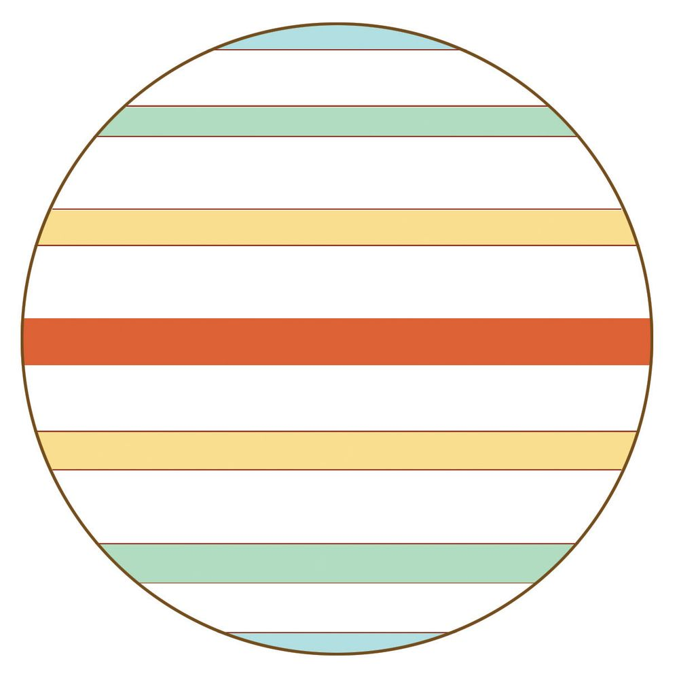
Figure fig_ch01_p019_01 (Page 19)
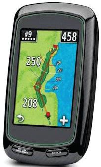
Figure fig_ch01_p019_02 (Page 19)
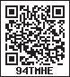
Figure fig_ch01_p019_03 (Page 19)
Standard - X
Network analysis
In contrast to the other two types of analysis, the network analysis
deals only with linear features on a map. Linear features include
roads, railways lines and rivers etc. The possibilities of network
analysis can be used to find out the easiest and less congested
roads from one place to another.
The possibilities of this analysis can also be used by tourists to
plan the maximum number of attractive destinations in the
available time. This may also help to bring an accident victim
to a suitable hospital through less congested roads.
Use of GIS
By using GIS, we can
$ compile data from different sources
$ update and incorporate data easily
$ conduct thematic studies
$ represent geographic features spatially
$ generate visual models of future phenomena and processes
based on the data collected
$ prepare maps, tables, and graphs
$
Satellite based Navigation System
Nowadays satellite-based tracking systems are used for
monitoring the location and movement of objects on the earth's
surface. It is used in several sectors like map making,
transportation etc. The most important among this is the Global
Positioning System of the United States of America.
Global Positioning System (GPS)
Figure 6.17
The Global Positioning System helps sensing the latitudinal and
longitudinal location and elevation of objects on the earth's
surface along with the corresponding time.
In this system a series of 24 satellites placed at six different orbits
between the altitudes 20000 and 20200 km above the earth's
surface locate objects. We can locate places with the help of the
Eyes in the Sky and Analysis of information
Indian Regional
Navigation Satellite
System (IRNSS)
The State - of - the art satellite - based
navigation system developed by India
is Indian Regional Navigation Satellite
System. Apart from India a radius of
1500 kilometers including the Indian
Ocean and countries like Pakistan and
China come under its surveillance.
signals received from the satellites in our
handheld device. The GPS requires signals
from at least four satellites to display
information like the latitude, longitude,
elevation, time, etc. in it. More satellites are
being included in this system for enhancing
accuracy. Though started initially for the U.S.
defence, this facility is now open to the public
since 1980.
List the other potentials of GPS.
Now onwards it is Bhuvan...
Bhuvan is a satellite based geo-portal platform developed by the ISRO for the purpose of preparing maps of Indian territory by using its own satellites. Bhuvan made
its humble beginning in March 2009. Basically it is a remote sensing image portal. The
prime function of Bhuvan is to prepare online maps by the maximum utilization of GIS and
remote sensing technologies. Satellites belonging to IRS service are used for data collection.
The map making facilities available with Bhuvan are more effective than that of the Google
Earth and Wiki mapia. Bhuvan can prepare very precise maps since the spatial resolution of
the photographs made available by Bhuvan is 10 metres. Let us have a glance at the services
provided by Bhuvan. The following facilities can be availed by visiting the web portal https:/
/bhuvan-app1.nrsc.gov.in.
• Bhuvan 2D - It provides 2D visualization of Indian terrain.
• Bhuvan 3D - it enables 3 dimensional visualization of the features on the earth surface.
• Information related to climate and
environment.
• Disaster Management Support Services.
• Ocean services.
• Services related to agriculture.
108
School Bhuvan
My Map
School Bhuvan is a map based e-learning portal for
the students which provides awareness on country's
natural resources, environment and their role in
sustainable development. It is an initiative of the ISRO
with National Council of Educational Research and
Training. Learners can avail this facility by clicking
the icon "School Bhuvan" on Bhuvan web portal.
Create a map/GIS is a mapping tool
available on Bhuvan web portal for
preparing maps of any region in India by
obtaining the details of the surface features
with the help of GIS technology.
Will you prepare a map of your region by
using this service with the help of your
teacher?
Flood control
In the contemporary history of Kerala, it has witnessed the most devastating
monsoon flood in the year 2018. The intensity of the flood faced by our state and
the damages it caused are inexplicable. The possibility of satellite remote sensing has been
utilized very effectively to overcome this natural disaster. We used this technology for the
preparation of flood hazard maps of affected areas, estimation of loss due to flood,
understanding the post flood conditions of rivers and the assessment of damages of the
areas flooded. The details of the surface features collected through remote sensing can be
analyzed with the help of GIS to prepare flood predicting models by identifying areas
vulnerable to flood.
GIS is one of the fastest developing technologies. This technology is being
effectively applied in various fields like industry, education, agriculture,
planning, irrigation, forestry, transportation, disaster management, disease
control, market analysis, tax collection, defence, tourism, natural resource management
etc. GIS has now become one of the most useful technologies in trade, communication,
resource management, and planning and development in particular. The wide use of
GIS technology give way to tremendous job opportunities in this field. Many world
class institutions conduct various courses and training programmes in geo - informatics
which includes GIS technology, remote sensing and so on. Candidates can grab better
job opportunities by taking part in such courses and training programmes.
The details of some institution in India conducting such courses are given below
Indio institute of Remote sensing (www.iirs.gov.in)
Survey of India (www.surveyofindia.gov.in)
IITs in India like IIT kharagpur - Earth science (www.iitkgp.ac.in)
IIT kanpur - Earth science (www.iitk,ac.in/es/)
The world is fast leaping towards progress. The relentless quest
for knowledge and the untiring efforts of man are the base for
all these advancements. New discoveries and advancements in
technology have made human life better. Hope you will also
Eyes in the Sky and Analysis of information
get involve in the efforts to make use of the technological progress
for the welfare of mankind.
Let us assess
•
•
•
•
•
•
110
Compare active remote sensing and passive remote
sesing.
What is the use of overlap in aerial photographs?
Briefly explain Geostationary and Sun Synchronous
satellites.
List out the fields where remote sensing is used.
What is the merit in using layers in GIS?
Write down the possibilities of overlay analysis.